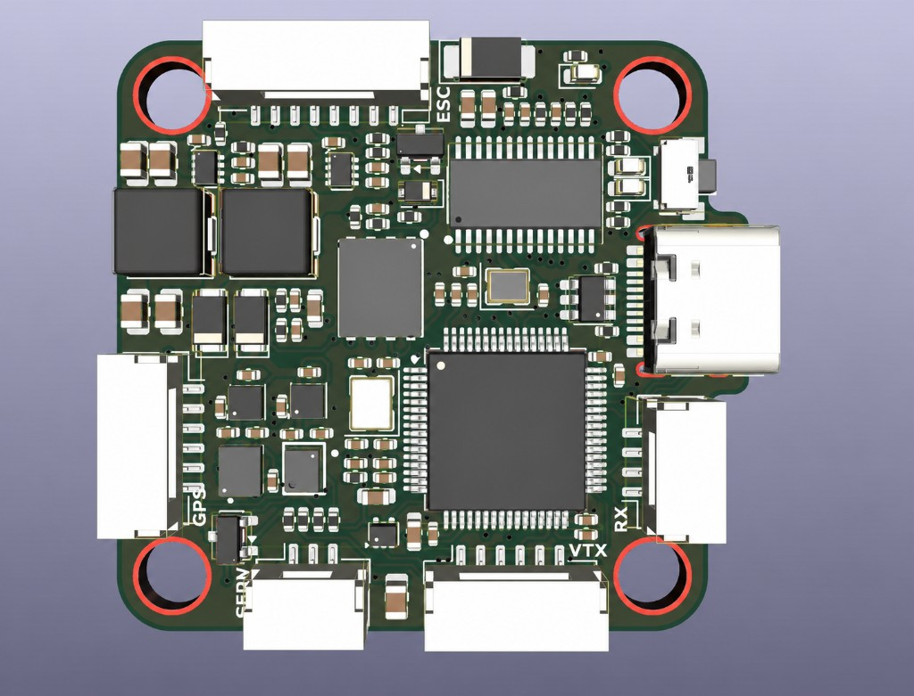
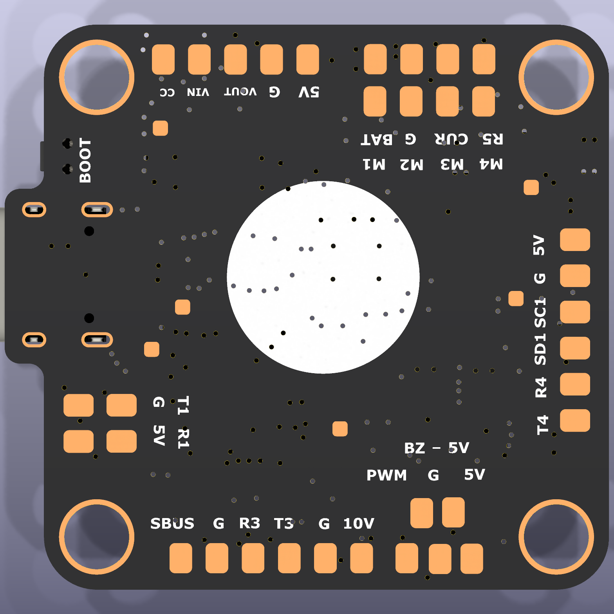

Custom Drone Flight Controller (In Progress)
A custom circuit board that will control one of the drones in my swarm robotics project.
Overview
A flight controller is the drone’s central computer. It reads motion sensors, decides how the drone should respond, and sends commands to the motors.
- My role: solo circuit design, component selection, and board layout.
- Board: 40.1 × 37.5 mm with four copper layers.
- Main processor: STM32F405, a microcontroller commonly used for real-time control.
- Status: design complete and sent for manufacturing; physical testing has not started.
How it works
What I designed
The board includes a motion sensor for orientation, a pressure sensor for altitude, memory for flight logs, USB-C, GPS and radio connections, and four motor-control outputs. I placed the motion sensor on its own clean power line so electrical noise is less likely to disturb its readings.
I used a four-layer layout: signals on the outside, with ground and power layers inside. This gives dense wiring a predictable return path and helps keep noisy power circuits away from sensitive sensors.
Board design



Main challenge
The challenge was fitting power conversion, digital communication, motion sensing, and analog video onto a board barely larger than an AA battery. I kept the power sections separated, protected the inputs, and routed sensitive signals away from switching circuits.
Why that matters: a board can look correct in software and still fail because of heat, noise, assembly, or component tolerances. The design is complete, but only physical testing can prove it works.
Current status
The schematic and four-layer layout passed KiCad’s automated design checks and the manufacturing files were sent to PCBWay. The boards have not arrived, so I am deliberately not claiming a working flight controller yet.
When they arrive, I will assemble one board, check each voltage before fitting sensitive parts, read live sensor data, and then begin flight-control firmware.